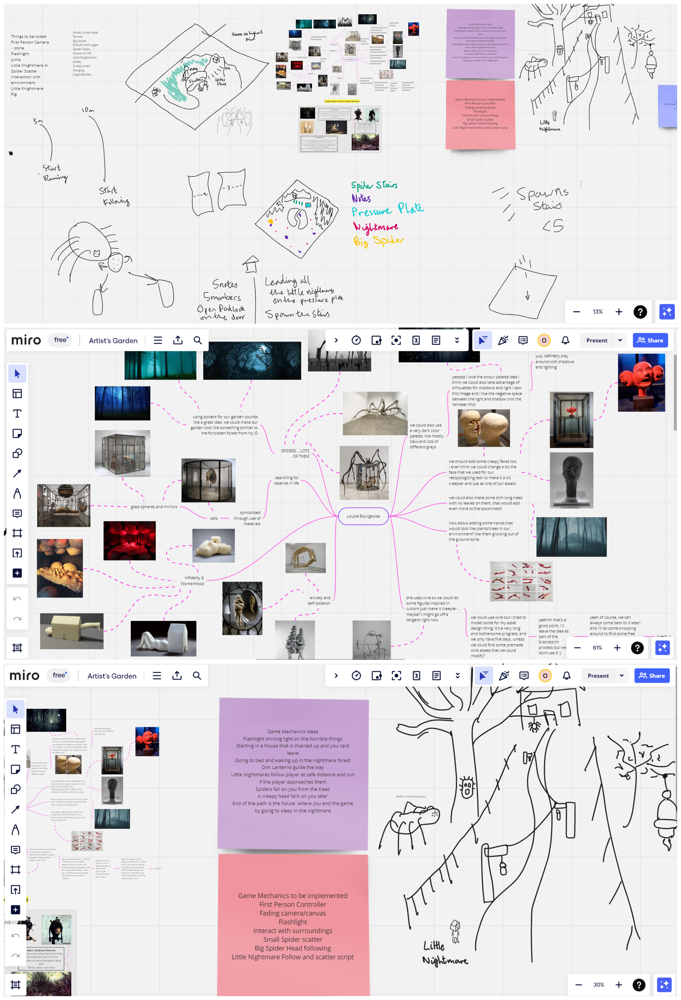

Ideas Sketch
We initiated our development journey by generating ideas and outlining initial concepts using Miro. Suggestions for map design and game mechanics underwent multiple iterations, culminating in a comprehensive project plan. To bring our ideas to life, we engaged in playthroughs using the initial sketches, enabling us to polish and enhance our concepts iteratively.


Core Game Mechanics
This section delineates the core mechanics of the game, with a focus on the elements I personally contributed to. Our development journey commenced with idea generation and conceptualization using Miro. Suggestions for map design and game mechanics underwent multiple iterations, resulting in a comprehensive project plan. To breathe life into our ideas, we engaged in playthroughs using our initial sketches, allowing us to refine and enhance our concepts iteratively.
Nightmare Creatures Puzzle
Conceptualization:
Nightmare creatures are friendly entities within the game world that provide hints and assistance to the player. They exhibit behavior such as following the player's movement and becoming scared when the player gets closer, indicating their timid nature.
Implementation:
Players can use nightmare creatures to solve puzzles by manipulating their behavior. For example, guiding nightmare creatures to specific locations to activate platforms or trigger mechanisms.
Testing and Iteration:
The behavior of nightmare creatures is fine-tuned to ensure puzzles are challenging but solvable. Player feedback is gathered from playtests to refine the behavior of nightmare creatures for a more intuitive experience.
Environmental Clues for Puzzle Solving
Conceptualization:
The game environment provides visual cues and hints to guide players in solving puzzles. Environmental elements such as creature statues or platform configurations hint at puzzle solutions.
Implementation:
Visual design of environmental elements is carefully crafted to be visually distinct and recognizable as puzzle clues. Environmental clues are seamlessly integrated into level design to provide a natural flow of puzzle-solving.
Testing and Iteration:
Environmental clues are tested for clarity and effectiveness in guiding players without being too obvious or obscure. Consistency in the presentation of environmental clues throughout the game is ensured.
Code Collection and Unlocking Padlock Key Puzzle
Conceptualization:
Players collect codes scattered throughout the environment to unlock a padlock key puzzle and progress in the game. The collection of codes is a central mechanic that drives player exploration and puzzle-solving.
Implementation:
Codes are strategically placed in various locations within the game world, including hidden areas or challenging-to-reach spots. The UI prominently displays the number of collected codes to track progress and provide feedback to players.
Testing and Iteration:
The distribution of codes is carefully balanced to provide a challenging but fair puzzle-solving experience. Accessibility of codes to players of varying skill levels is ensured, and adjustments are made based on player feedback.
Spider Boss Enemy AI and Code Retrieval
Conceptualization:
A spider boss enemy guards a valuable code, and players must defeat it to retrieve the code. The encounter with the spider boss is a climactic moment that tests the player's skills and strategic thinking.
Implementation:
The spider boss patrols its territory and presents a formidable challenge to players. Traps are strategically placed in the environment, which players can use to weaken or defeat the spider boss and retrieve the code.
Testing and Iteration:
The behavior and abilities of the spider boss are thoroughly tested to ensure engaging and fair gameplay. The effectiveness of traps is balanced to provide players with multiple viable strategies for defeating the spider boss.